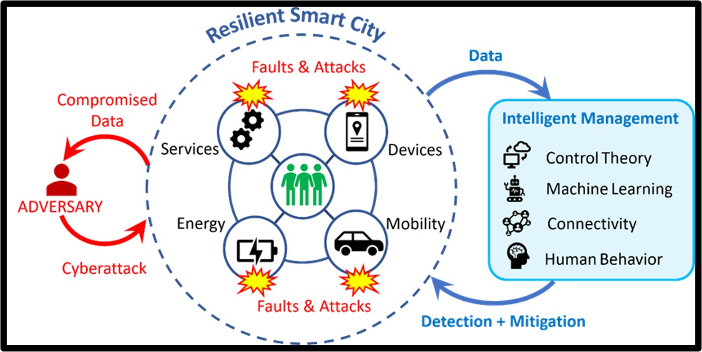

Department of Mechanical Engineering
The United Nations estimates that by 2050 more than half of the world's population will be residing in urban areas. Consequently, sustainable and efficient operation of these urban areas has necessitated the emergence of "SMART CITY". However, to meet the needs of the stakeholders of such smart cities, namely the urban citizens, human-centric urbanization must be a priority.
Motivated by these goals, my research objective is to unify systems and control theory with machine learning to tighten safety and security, improve system resilience, and provide autonomy to citizens.
Human-centric mobility is an integral part of a smart city...
Our second research interest deals with challenges in ensuring safety in Battery Energy Storage Systems (BESS)...
The anomalies in dynamical systems can be categorized into three types...